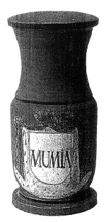

ŞEKİL 41. Üzerinde “MUMİA” etiketi bulunan eski bir eczacı kavanozu.88
Mumya kitlesinin yalnızca sert parçaları değil yumuşak kısımları da öğütülerek toz haline getirilir ve bundan tentür (sıvı içecek) ve merhemler üretilir, içsel ve dışsal olarak çeşitli hastalıklara karşı kullanılırdı. Frankfurt’lu hekim Joachim Strüppe, 1574 yılında yayımladığı bir çalışmasında mumya tozunun, aralarında öksürük, boğaz ağrısı, baş dönmesi, damla hastalığı, kalp ağrısı, titreme, böbrek ağrısı ve baş ağrısının da yer aldığı yirmi bir çeşit uygulama alanının bulunduğunu belirtmiştir. Mumya tozunun ilaç olarak kullanımı çok farklı karışımlar halinde gerçekleştiriliyordu. Strüppe idrar yolları hastalıkları için onun keçi sütü ile karıştırılmasını öneriyordu. Bunun dışında sirke, bal, biberiye, kiraz suyu, şarap vb. de mumya reçetelerinde yer alıyordu. Taze tereyağı ile karışımı, zehirli hayvan ısırma ve sokmalarına karşı ilgili yere sürülüyordu. Ayrıca yara, bere ve kesiklerde kan durdurucu ilaç olarak da kullanımı öneriliyordu. 19. yüzyılda mumya tozu, veteriner hekimlikte hâlâ kullanılıyordu.
Avrupa’nın çoğu saray ve konaklarında simyaya yüksek derecede önem verildiği dönemlerde yalnızca altın üretmenin yolları değil, ölümsüzlük ya da uzun ömür bahşedecek eliksirler de aranıyordu. Bu nedenle zamana direnerek çürümeyen bir malzeme olan “mumiya”ya büyük ilgi gösterildi ve özel tüccar-aktarlar, eczaneler için İskenderiye’den yoğun bir mumiya dışalımına giriştiler. En sık uygulanan mumyalamada, mür ve hintsümbülü yanında, bunların yarı değeri kadar tutan bitüm kullanılıyor, en ucuz mumyalama ise yalnızca bitüm ve ziftle gerçekleştiriliyordu (ŞEKİL 42). Bu nedenle Avrupa eczanelerinde işlenen mumya-tozları, büyük oranda bitümden ibaretti.88 Rönesans döneminde tüm hastalıkların sağaltımında toz haline getirilmiş mumyalardan yararlanmak, çok gözde bir uygulamaydı. O dönemde saygın bir eczacının rafında, kesinlikle “mumya tozu” ile dolu bir kavanoz bulunurdu. Ayrıca 18. ve 19. yüzyıllarda Mısır mezar yerlerinden toplanan gemiler dolusu mumya sargı bezi, kâğıt yapımında kullanılmak üzere Amerika ve Avrupa’ya sevk edilmiştir.